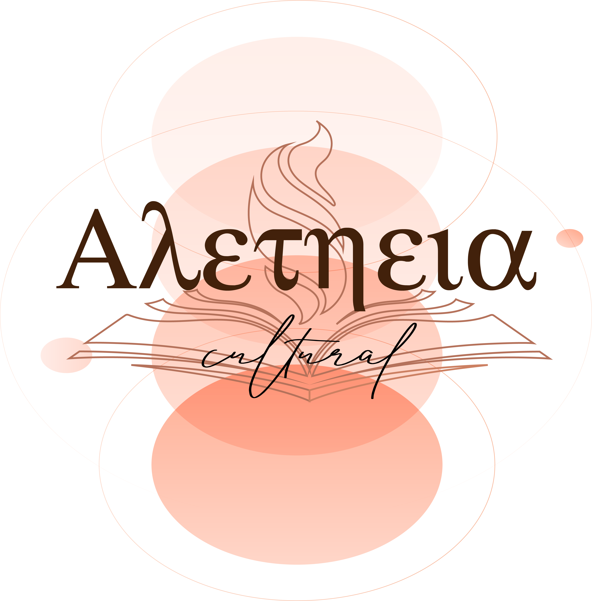

 Aletheia
Inicio
Culturas Antiguas
Mesopotamia
Roma
Grecia
Culturas Modernas
Asia»
China
Corea»
Norte
Sur
Japón
Vietnam
América»
Norte»
México
Estados Unidos
Centro»
Panamá
El Salvador
Sur»
Chile
Argentina
Europa»
Francia
Italia
África »
Egipto
Etiopía
Mapa Cultural
Sobre La Fundadora